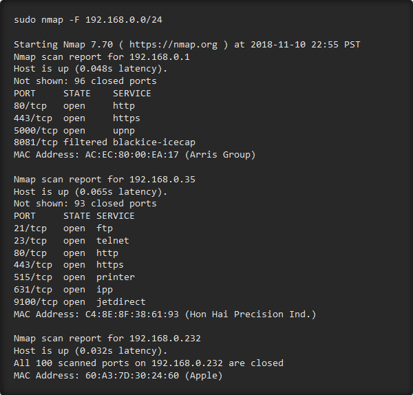

Use Beginner Python to Build a Brute-Force Tool for SHA-1 Hashes
Developers creating login systems know better than to store passwords in plain text, usually storing hashes of a password to prevent storing the credentials in a way a hacker could steal. Due to the way hashes work, not all are created equal. Some are more vulnerable than others, and a little Python could be used to brute-force any weak hashes to get the passwords they were created from.
A Little Bit About Hashes
Hackers often steal entire databases of user login and password data, and because of this, hashes are the preferred way to store sensitive information like passwords.
Hashes are different from encryption because they do not store data. Instead, the number that makes up a hash is the result of a calculation run on whatever it is you're hashing, be it a password or an entire file. This is used to ensure that the file you are downloading matches the file you're intending to download or to confirm the password the user entered matches the password they signed up with.
Depending on the size of the file or password you're hashing, hashes like SHA-1 or MD5 will take fixed blocks of the data you're hashing and run a complex calculation on it block by block until it reaches a final value. This value is a very long number designed to be unique so that one can verify that one file matches another by comparing the hash values. If the hash value is different, then something about the file has been changed.
This is great because if the user enters any password other than the one they chose, the hash value will be completely different. Because of this, the developer just needs to store the hash, because any time the user needs to log in, they can just enter the password to create a new hash to compare to the stored one.
As an example, I hashed nullbyte to the following SHA-1 value. You can create your own SHA-1 hash at sha1-online.com to see for yourself what this looks like.
One Problem with SHA-1 Hashes
Unfortunately for developers, not all hashes are created equal for storing passwords. For hashes like SHA-1, there are a few problems that make saving passwords with SHA-1 a less-than-ideal solution.
To highlight one, every time you hash the same word with SHA-1, it generates the exact same hash. While this is by design, you can simply take a huge number of guesses and hash them all into SHA-1, and then compare the hashes rapidly to get the password the SHA-1 hash was derived from. Because SHA-1 is designed to be fast, this process takes a very short amount of time, which makes it even easier to brute-force.
There are some solutions to this, and one of the most popular is adding a salt. A salt is a string of text that you can add to the password before hashing it. An example would be to add the word salt to the password nullbyte. While we know the SHA-1 value of nullbyte from above, the hash of nullbytesalt or saltnullbyte would be totally different. This helps, but if the salt is not per user, then figuring out the salt is not too difficult and you're back to the same problem.
How Bcrypt Can Help Make Hashes More Secure
A better solution is to add a random salt, and there is a hashing algorithm that was created for storing passwords with exactly this in mind.
Bcrypt is not only deliberately slow to foil brute-forcing, it also adds a random salt to each hash it generates. As a result, no two bcrypt hashes will be the same, even if they're made from the exact same password. To check a guess against a bcrypt hash, you instead have to use a bcrypt function that takes the password guess and the hash as an argument and returns the result of whether or not they match.
To show off how these different hashes work, I wrote some Python to turn any password into a SHA-1, MD5, and bcrypt hash.

As you can see below, the MD5 and SHA-1 hashes are all identical, but the bcrypt hashes change each time they're generated. For developers, bcrypt is clearly the better choice. But if we happen upon a SHA-1 or MD5 hashed password database, how could we actually go about brute-forcing the hash?
Building a Python3 Program to Brute-Force SHA-1
Part of growing up as a hacker is learning to write your own tools. At first, your tools will be simple and solve small problems, but as you gain experience, you'll be able to achieve more and more. When you're getting started, programming languages like C++ that are strongly typed can be difficult for beginners to understand, but Python3 is a flexible and beginner-friendly language that lets us abstract ideas and build prototypes with ease.
The simple program we'll write today will help practice the way a hacker creates a tool to exploit a vulnerability. In this example, SHA-1 is vulnerable to brute-forcing because you can compare two hashes together, so we'll write a program to do exactly that.
To write any program, you'll need to write out the steps that your program needs to follow in order to succeed. This list might seem a little long, but it can be condensed and you should be as specific as you can for the way things need to work in order to get the output you want. I prefer to use whiteboards or online flow-chart makers like MindMupp to draw the way these programs should flow from start to finish.
When you have your steps laid out, you can start jumping into pseudocode, which is where you lay down the steps in the order in a way that is readable but getting closer to the way the code would actually be expressed. With this pseudocode written, you can start to fill in your code line by line, correcting for mistakes as they happen, and watch each step of your program begin to take shape and interact with each other.
What You'll Need to Continue
To follow this guide, you'll need a computer with Python3 to work on. Python3 has a number of differences from the previous version of Python, so you should be sure to get the correct version. You can install Python3 in a number of ways. In Linux, you can type the following to install Python3.
apt install python3
You will need a Python3 IDE (integrated development environment). These are programs that will help you write, test, and experiment with your code. In particular, I recommend PyCharm from Jetbrains. In addition, the professional edition is available free of charge to students, which is absolutely worth it if you happen to be eligible.
Don't Miss: The Principles & Technologies Needed for Cracking Passwords
For everything to work properly, we'll need to import some libraries. We'll be using the urllib, urlopen, and hashlib libraries for this code to be able to open files from a remote URL and hash password guesses into SHA-1. To include them, create a new Python3 file in your IDE and type the following into the first line.
This will import the libraries needed, ensuring the rest of the program has access to these libraries. If you need to install any of these libraries on your computer to run this script, you can generally do so with pip install and then the name of the library you need.
To follow along, you can download the Python programs I wrote for this example. To do so, open a terminal window and type the following three commands to download the scripts, change into its directory, and list the files in it.
Step 1 : Get the SHA-1 Hash from the User
For the first command, we'll need to get the hash we want to crack from the user. To do this, we can use the input function, which will display a prompt to the user and allow them to enter a response.
In Python, we can store this response in a variable without doing anything beforehand. This is because Python isn't like C++, which requires that you to declare everything at the beginning. We can just create variables to hold data we want as we go.
We'll name our variable sha1hash because we will be storing an SHA-1 hash inside of it. We can just type that to create the variable, and then we'll need to assign the user's response to fill that variable. In Python, the equals (=) symbol does not mean it's comparing something to see if it is equal. That's actually done with two equals signs (==) instead. The equals symbol is more of a command in Python, the variable to the left is being assigned the data on the right of the equals sign.
We'll be assigning whatever the user types, so we'll call the input function, which also allows us to put the text that appears to the user inside two parentheses. To tell Python we want to print a string, or a collection of characters, we'll enclose whatever we're typing in quotation marks as well. The end result should look like this:

Step 2 : Open a File Full of Password Guesses
Next, we want to open a list of many common passwords. We'll be using a list of the 10,000 most common passwords for our example, which is a plain text file hosted on GitHub. You can use other lists, such as leaked passwords online or ones made with the Mentalist or Crunch.
Don't Miss: Use Leaked Password Databases to Create Brute-Force Wordlists
For the file we're using, we'll be again assigning it to a variable, this time called LIST_OF_COMMON_PASSWORDS. To open the file, we'll be using a function called urlopen, which allows us to easily open this text file and tell Python the correct type of encoding. Use the format below.
urlopen('TheURLYouWantToOpen').read()
This will open the URL enclosed in quotes with the read method, meaning we want to read text from the file. To make sure the str() function knows what it's working with, we'll also add a command and 'utf-8' after this function to tell the program we are using UTF-8 text encoding.
We'll again be saving the data as a string, and to prevent any problems with doing so, we can make sure the data we're putting into the variable is a string by first "casting" it to a string. This means trying to change the data to another type, and it can be done to convert integers to strings, strings to bytes, and any other sort of data type you want. To do this, we'll type str() and then include the data we want to turn into a string inside the parentheses. The final result should look like below.